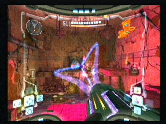

Weapons, weapons, weapons. Where would we be without weapons of some sort in today's video games. How would we be able to escape the evils of enemies like Space Pirates without them? A futuristic game needs futuristic weapons and Metroid Prime has them! Not only are they powerful, but fun as well!
The first weapon: THE POWER BEAM
After descending to the depths of Tallon IV, you are only equiped with the power beam. Don't be fooled by the name though, because this weapon will kill only the smallest of bugs and open the minimal of doors. It shoots an orange beam of light at the enemy and can be upgraded so that it charges up and fires a more powerful beam!
The second weapon: THE MISSILES
Fun though they may be, care is needed on the rate they are used. Unlike most other weapons in the game, these are "used up" as you fire them. They prove a powerful upgrade from the power beam, but the downside is they need to be replenished. By shooting boxes and looking in secrets, missile packs and capacity upgrades can be found!

The third weapon: THE WAVE BEAM (pictured above)
This weapon looks amazing! It fires three electrically charged beams together and is effective on particular enemies. It has a purple colour, meaning that doors with a purple rim can be opened with these guns. The wave beam, like the power beam can be charged up to release a more powerful version - and do more damage in the long run. It can also be used to re-energise power systems.
The fourth weapon: THE ICE BEAM
A cool weapon - literally! A charged up ice beam will freeze an enemy still for just enough time until you blast it with a missile! Pieces of frozen alien guts flying across the screen. They can also be used to open white coloured doors!
The fifth weapon: THE PLASMA BEAM
Plasma
beam has a short range but compensates for this with its immense power.
It can turn enemies to dust with one shot, and like all the other beams it
can be charged up to deliver a force with increased power. This beam
can be used to melt pieces of environment in the game (especially useful in
the Phendrana Drifts).